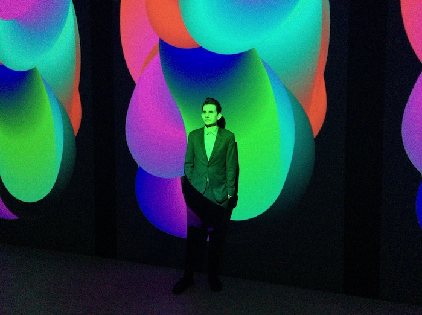

into time .com
A net.art project by Rafaël Rozendaal
Presented by Jeongin and Erin
Next

Rafael is a New York-based, Dutch-Brazillian visual artist whose works range from virtual experiences to physical creations.
Despite their wide-ranging variety of forms, his pieces all have one thing in common: that they stem from his fascination with moving images and the concept of interactivity.
He is also known for being one of the first artists to sell a website as an artwork after selling the domain containing his web-based pieces to art collectors and adding their names to the source code.